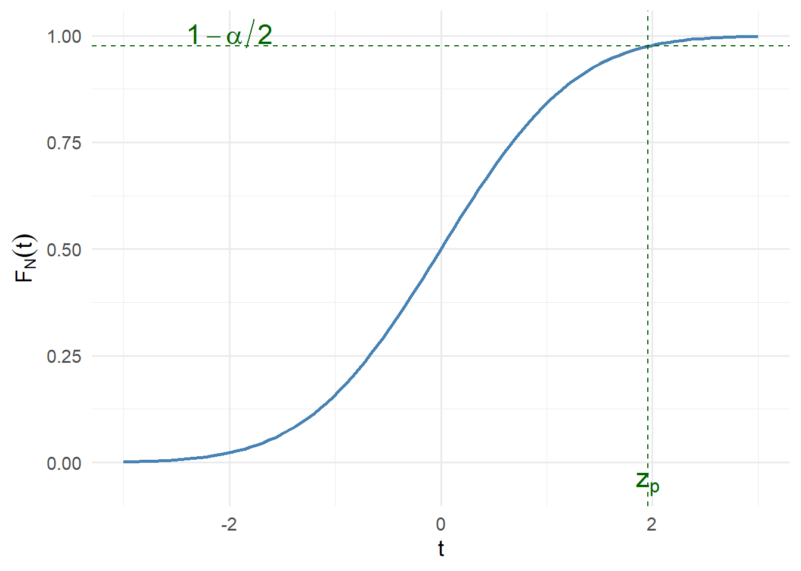

# normal distribution with 50 random values, a mean of 0 and a standard deviation of 1
random_values <- rnorm(50, mean = 0, sd = 1)
head(random_values)[1] 0.01050730 0.27205325 0.05998468 1.21702870 -0.47757773 2.31030220\(\Large X \sim \mathcal{N}(\mu, \sigma^2)\)
PDF of a Normal distribution \(\large \forall t \in \mathbb{R}, \quad \LARGE f_X(t) = \frac{1}{\sqrt{2\pi}\sigma} e^{-(t-\mu)^2/2\sigma^2}\)
The rnorm function create a vector of random numbers that follow a ‘bell-shaped’ distribution Parameters: - n the number of random value to generate - mean the center of the distribution (0 by default) - sd the spread of the distriburion (1 by default)
# normal distribution with 50 random values, a mean of 0 and a standard deviation of 1
random_values <- rnorm(50, mean = 0, sd = 1)
head(random_values)[1] 0.01050730 0.27205325 0.05998468 1.21702870 -0.47757773 2.31030220Remark:
“rnorm generates random deviates.”
In probability and statistics, a random variate (or simply variate) is a particular outcome or realization of a random variable.
Other outcomes of the same random variable might yield different values — often referred to as random numbers [@wikipedia-random-variate].
The qnorm function returns the quantile (e.g. the inverse of the CDF).
Parameters:
- p vector of probabilities
- mean the center of the distribution (0 by default)
- sd standard deviation of the distribution(1 by default)
qnorm return the value \(z\) such that \(\mathbb{P}(Z \le z) = p\) where \(Z \sim \mathcal{N}(0,1)\)
alpha <- c(0.01, 0.05, 0.1)
q <- qnorm(1 - alpha / 2)
q[1] 2.575829 1.959964 1.644854These are the z-values for:
- 99% CI (α = 0.01)
- 95% CI (α = 0.05)
- 90% CI (α = 0.10)
Let us consider : \(\mathbb{N} \sim \mathbfcal{N}(0;1)\)
The quantile of order \(p\) for \(\mathbb{N}\), denoted \(Z_p\) is given by : \[
F_N(Z_p) = p \Leftrightarrow z_p = F_N^{-1}(p)
\]
alpha <- 0.05
p <- 1 - alpha/2
z_p <- qnorm(p)
curveX <- seq(-3, 3, length.out = 400) # define the plotting window (–3 to 3)
ggplot(data.frame(t = curveX), aes(t)) +
stat_function(fun = pnorm, linewidth = 1, colour = "steelblue") + # CDF
geom_hline(yintercept = p, linetype = "dashed", colour = "darkgreen") +
geom_vline(xintercept = z_p, linetype = "dashed", colour = "darkgreen") +
annotate("text", x = -2, y = p + 0.03, label = "1 - alpha/2", size = 6,
parse = TRUE, colour = "darkgreen")+
annotate("text", x = z_p, y = -0.05, label = expression(z[p]), size = 6,
colour = "darkgreen") +
labs(x = "t", y = expression(F[N](t))) +
theme_minimal(base_size = 14)